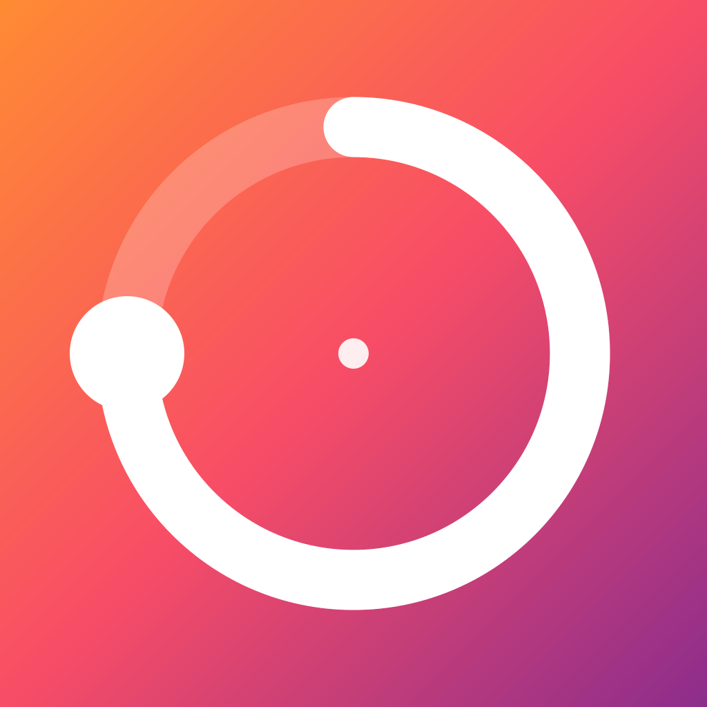
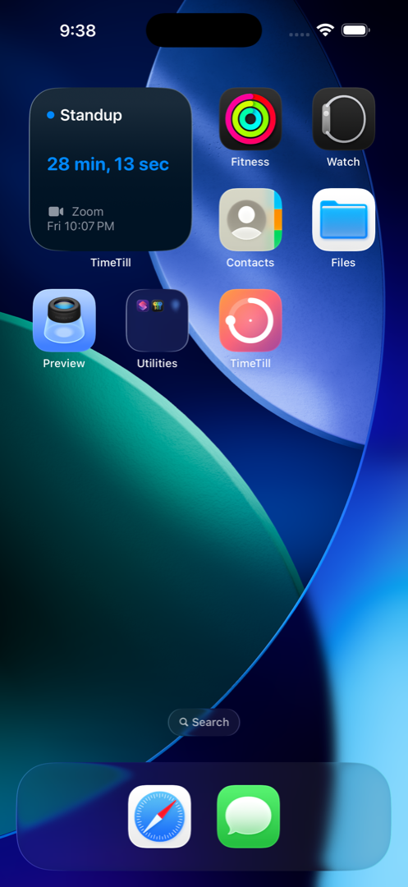
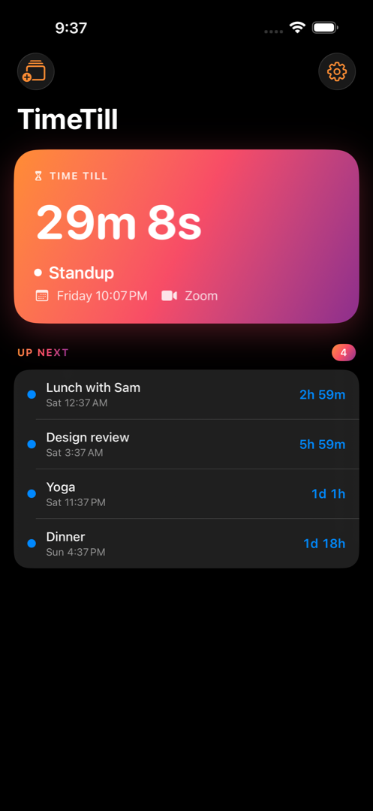
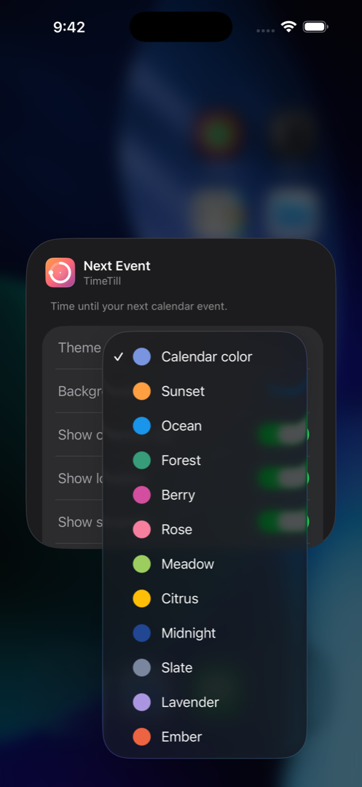
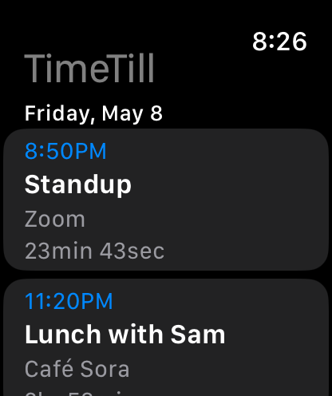
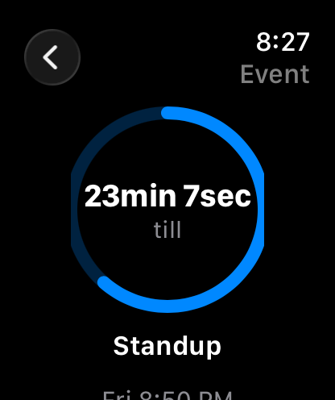

TimeTillA live countdown to your next event — on your iPhone, Apple Watch, Lock Screen, and in the Dynamic Island. Stop checking the clock.
Every surface where Apple lets a calendar live, TimeTill is there — beautifully.
Small, Medium, and Large. The hero countdown in big rounded type, an "UP NEXT" agenda, and a "Then" peek at what's after.
Inline, Circular, and Rectangular. Your next event glanceable without unlocking.
When an event is approaching, TimeTill rises into the Dynamic Island automatically. No setup, no notification spam.
Complications for every modern face — Inline, Circular, Rectangular, Corner — plus a watch app with day-grouped agenda and tap-to-join handoff to iPhone.
Sunset, Ocean, Forest, Berry, Rose, Meadow, Citrus, Midnight, Slate, Lavender, Ember, or follow each calendar's own color. Per widget.
Counting down to a trip, a launch, or your weekend? Pin a specific event so the widget tracks it instead of the next meeting.
Real screenshots from the shipping app. iPhone and Apple Watch — every glanceable surface.





TimeTill reads the calendar already on your devices. Nothing is uploaded, nothing is tracked, no accounts.
The core app — the live countdown, agenda, and basic widgets — is free. A one-time TimeTill+ unlock lights up extra themes, pinned events, the Live Activity, and the watch app. No subscription, no ads, ever.
It rolls forward to the next upcoming event automatically. The hero card, widgets, complications, and Live Activity all flip together — no taps, no notifications, no fuss.
No. TimeTill is a great iPhone-only app. The watch complications and the watch agenda are bonuses if you have one.
Yes — anything that shows up in the iOS Calendar app is fair game. TimeTill reads through Apple's standard EventKit, which is where Google / Outlook / Fastmail / iCloud calendars all live once you've added them in Settings.
iPhone running iOS 18 or later. iPad running iPadOS 18 or later. Apple Watch running watchOS 11 or later.
Never. Read-only. TimeTill only displays events; creating, editing, and deleting all happen in the Calendar app.
Nowhere. There's no server, no account, no cloud. Events read from your device, render on your device, and your widget configuration stays on your device. Read the full privacy policy.
iPhone, iPad, and Apple Watch. Free to download — no ads, no subscriptions, no analytics, ever. TimeTill+ is a one-time $4.99 unlock that lights up extra themes, pinned events, and the Live Activity. It's also the way to support the one person who built and maintains this.
Download on the App StoreCurrently in App Store review — link goes live as soon as Apple approves.
MADE BY ONE PERSON
I built TimeTill because I was tired of opening Calendar twenty times a day to check how long until the next thing. It's hand-built in SwiftUI, with no servers, no analytics, and no subscriptions. If something breaks or feels off, email me — it's a person on the other end.